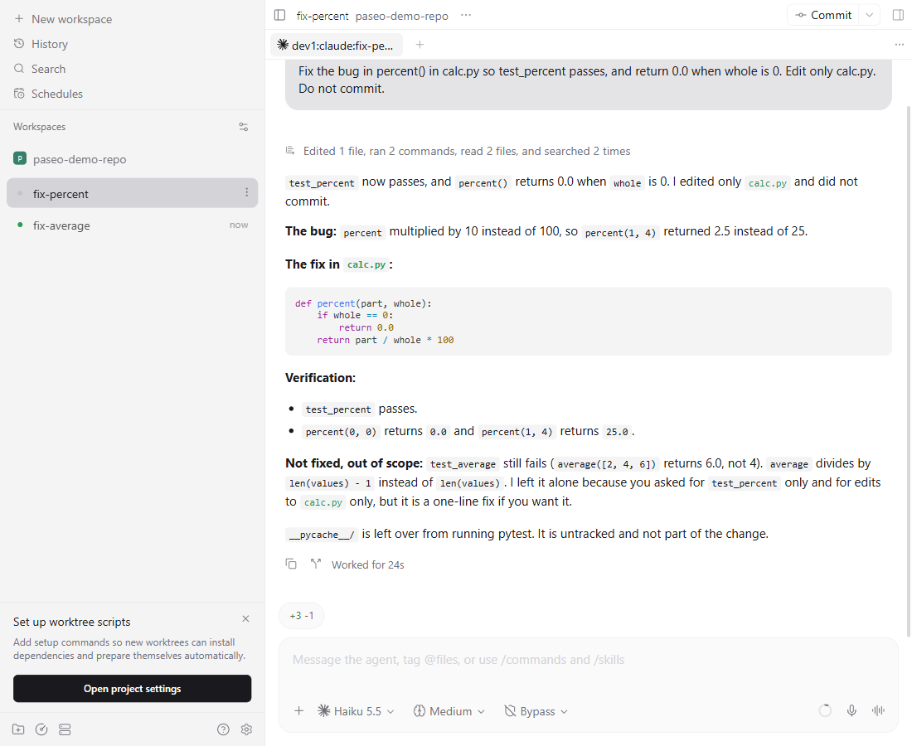

Agent Hub
Hand a task from any AI client to any agent provider and get a verdict plus a diff back. Agent Hub configures and extends the Paseo agent daemon.
View on GitHubQuick startWhat it is
Any client, any provider
Claude Code, Codex, Qoder, OpenCode or Qwen Code can delegate to Codex, Qoder, Claude, Qwen Code, an office SGLang server or a laptop llama.cpp server.
Gate plugin
After each turn: secret scan, diff-size and path check, one re-prompt, then a clear PASS or FAIL verdict.
Usage plugin
Counts only, never prompt text. Feeds an OTel, Prometheus and Grafana stack and a per-session statusline line.
Routing and pre-flight
A routing table picks the provider chain and falls back on failure. A laptop pre-flight keeps a GPU-less machine from running a model.
Architecture
Screenshots



just doctor
hub line
Quick start
pwsh ./setup.ps1 # one-time machine setup (Linux/macOS: sh ./setup.sh) just deps && just test # install dependencies, validate every config template just doctor # check the daemon, MCP and each provider
Usage stack: copy deploy/usage/.env.template to .env, then run docker compose up -d in deploy/usage. Full docs are in the README.